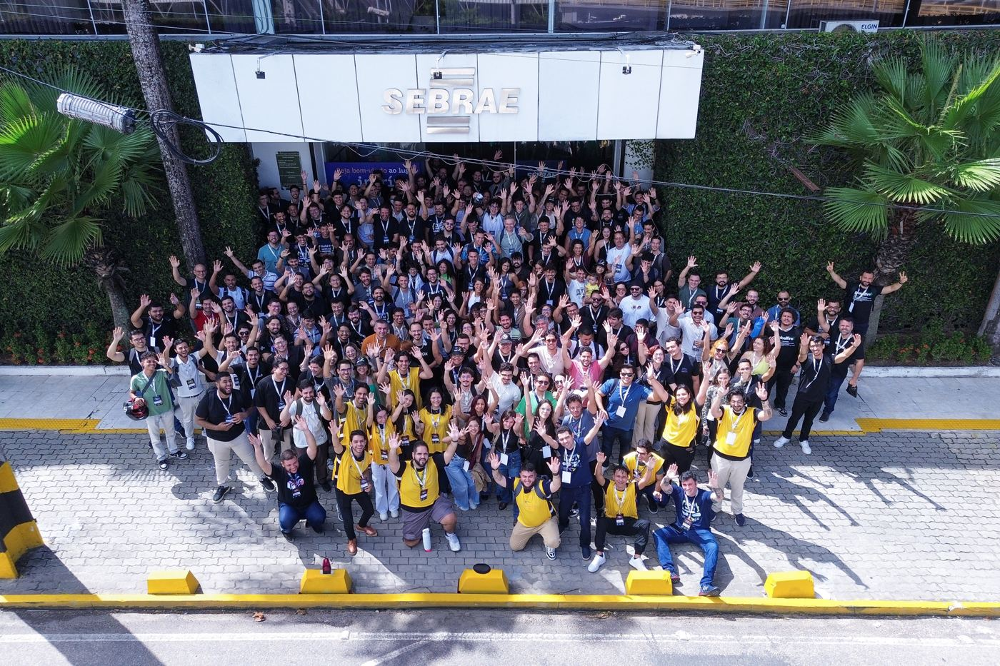

Minha Estreia aos Palcos: Como Foi Palestrar no Google I/O Extended + Build with AI 2026 – Natal
Como palestrei aos 19 anos, no terceiro período da faculdade, em um dos maiores eventos de tecnologia do RN — e o que aprendi com a experiência.

No sábado, dia 06 de junho de 2026, tive a oportunidade de palestrar no Google I/O Extended + Build with AI 2026 – Natal, evento realizado pela comunidade do Google Developer Groups (GDG) Natal.
Com o título "Como a Tecnologia Pode Mudar o Amanhã: Explorando o Cosmos das Oportunidades e do Conhecimento", usei minha palestra pra falar sobre temas pouco abordados no mundo da tecnologia — os desafios que enfrentei ao longo da minha trajetória e como transformei essas dificuldades em estratégia pra potencializar meus estudos e me destacar como estudante e futuro profissional.


Com o apoio de amigos da área e do meu professor no IFRN, Bruno Gomes, consegui transmitir essa mensagem e guiar novos estudantes rumo a um futuro promissor na tecnologia — mostrando que o caminho vai muito além da bolha do desenvolvimento web, alcançando a Ciência da Computação como um todo.

Aproveitei o espaço também pra falar sobre os alunos que oriento e como as experiências no Núcleo de Inovação em Computação (NIC) e na Bolsa de Tutoria de Aprendizagem em Laboratório me ajudaram a construir uma metodologia clara pra compartilhar com eles.
[EXEMPLO DE CITAÇÃO — estilo do > no Markdown] Dá pra abrir espaço no mercado antes mesmo de terminar a graduação.
Falar em um dos maiores eventos de tecnologia do RN aos 19 anos, ainda no terceiro período da faculdade, foi uma virada de chave pra mim — um lembrete de que dá pra abrir espaço no mercado antes mesmo de terminar a graduação, desde que a gente saiba transformar as próprias dificuldades em direção.